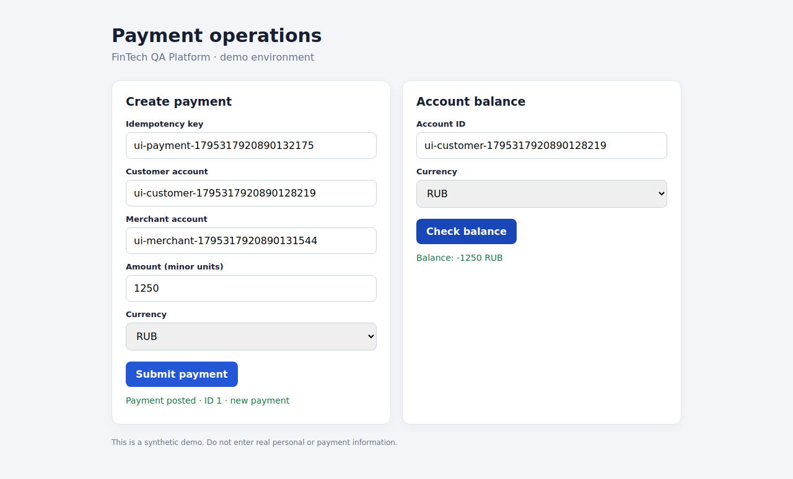
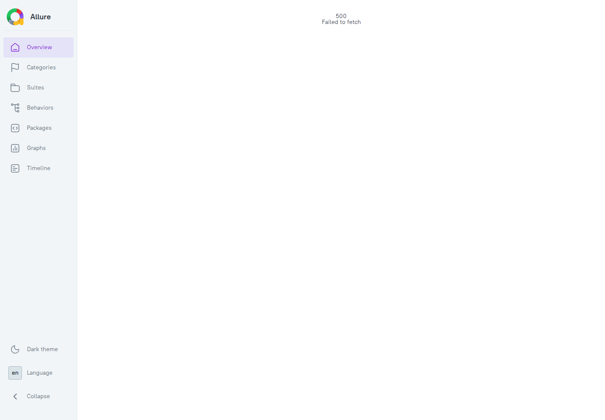

Independent QA engineering case · 2026
FinTech QAEngineering Platform
Демонстрационная платёжная платформа, на которой проверяется полный путь операции: от отправки REST-запроса и обработки сервисами до записи в ledger, изменения баланса и проверки результата в браузере.
9 API-тестов pytest
2 браузерных E2E-сценария Playwright
3/3 успешных CI job в последнем проверенном запуске
11 автоматизированных проверок суммарно
Что именно тестируется
Ключевая задача — проверить не только HTTP-ответ, но и согласованность данных между платёжным сервисом и бухгалтерским ledger.
Payment Service
Создание платежа и получение его статуса
Валидация суммы и счетов
Повторный запрос с idempotency key
Обработка недоступности Ledger Service
Ledger Service
Двойная запись debit / credit
Сохранение баланса счетов
Отсутствие повторного списания при retry
Сверка сумм и валют между сервисами
Browser E2E
Пользователь отправляет платёж через UI
Интерфейс отображает успешный результат
Баланс клиента отражает операцию
Форма блокирует нулевую сумму
Test engineering
Тест-стратегия, план и тест-кейсы
Риски, SQL quality checks и шаблоны баг-репортов
Postman collection для ручных API-проверок
JUnit XML и Allure HTML в CI artifacts
Архитектура тестового стенда
Сервисы запускаются в Docker Compose. UI отдаётся Nginx, backend-сервисы взаимодействуют по HTTP и сохраняют данные в PostgreSQL.
Playwright Browser E2E
→
Nginx · UI localhost:8080
Payment Service FastAPI · :8000
⇄
Ledger Service FastAPI · :8001
PostgreSQL Payments · Transfers · Ledger entries
↑
pytest / SQL checks API · Integration · Data validation
Python FastAPI pytest Playwright Allure PostgreSQL Docker Compose GitHub Actions Postman SQL
Результат работы тестов
Скриншоты созданы непосредственно в ходе успешного CI-запуска: Playwright сохранил состояние UI после операции, а Allure — сводный отчёт.

✓ Playwright: успешный платёж и проверка баланса

✓ Allure: HTML-отчёт браузерных проверок
CI pipeline
✓ quality — Ruff lint и pytest API suite✓ compose-smoke — сборка сервисов, платёж, повторный запрос и проверка балансов в PostgreSQL✓ ui-e2e — запуск Chromium, Playwright, генерация Allure и публикация скриншотов
Последний проверенный запуск: GitHub Actions · run #44876335369 . Все три job завершились успешно; JUnit и Allure загружены как CI artifacts.
Границы демонстрации. Это учебно-портфолийный стенд с синтетическими данными, а не реальная платёжная система. Сервисы используют один экземпляр PostgreSQL с раздельными таблицами; межсервисный вызов синхронный. Авторизация, production security, нагрузочное тестирование и outbox/saga не входят в объём проекта.